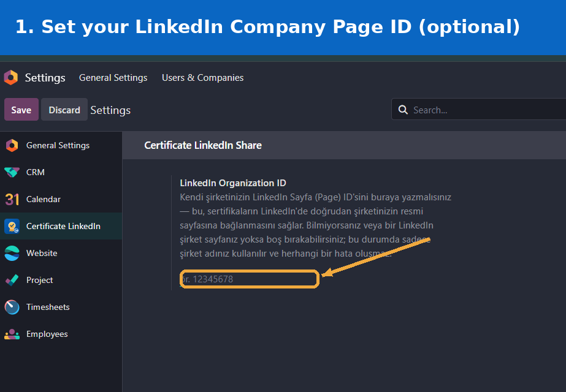
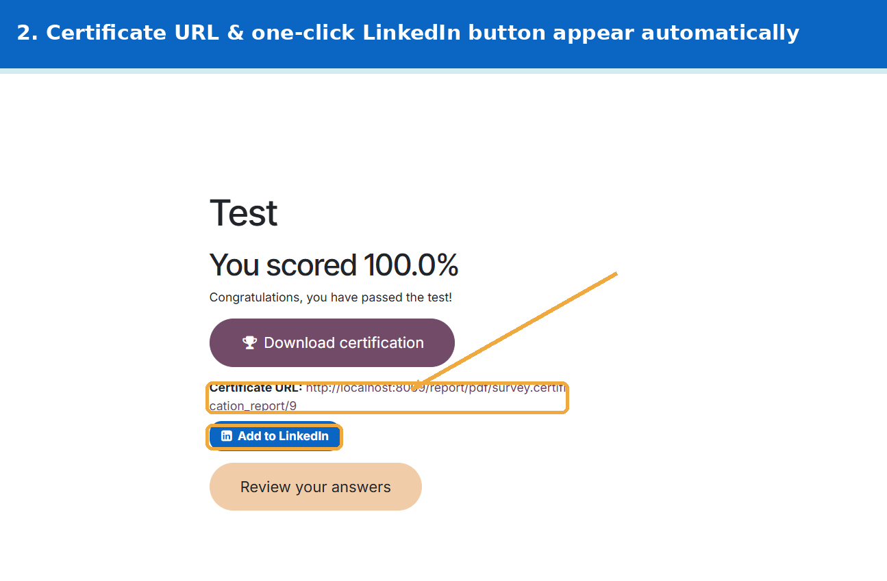
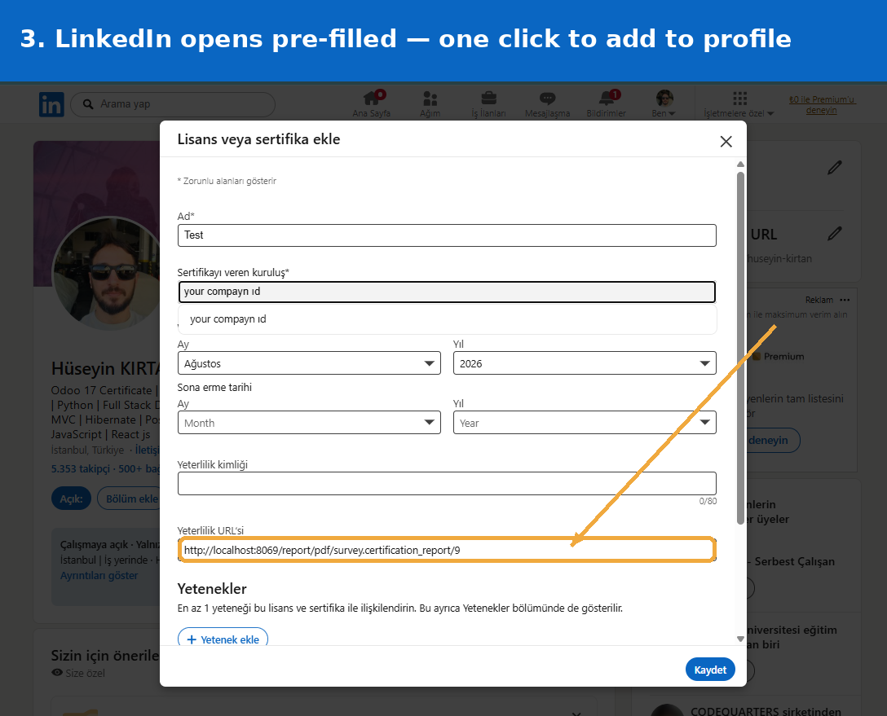
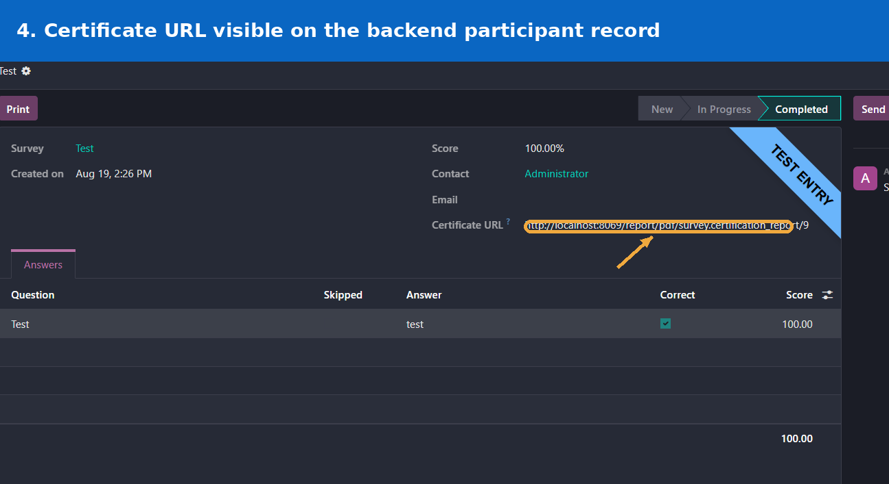

Let every participant who passes your Survey certification add it to their LinkedIn profile in one click — completely free.
Odoo's Survey app already issues certificates when someone passes a certification test, but there is no easy way for participants to share that achievement. Certificate URL & LinkedIn Share Button solves this by adding exactly two things to the certification completion page: a direct Certificate URL, and a one-click "Add to LinkedIn" button.
Your certificate design, layout and content stay completely untouched — this module does not replace or modify your certificate PDF in any way.
Automatically generated for every passed certification, visible on both the public completion page and the backend participant record.
Uses LinkedIn's official "Add to Profile" flow — name, organization, issue date and certificate link are all pre-filled.
Optionally add your LinkedIn Company Page ID in Settings so shared certificates link to your real company page. Leave it empty and it still works.

Optional setting under Settings > General Settings > Certificate LinkedIn

Certificate URL and the Add to LinkedIn button, shown automatically on the completion page

LinkedIn opens with the certificate name, organization and URL already filled in

Staff can also see and copy the Certificate URL directly from the participant record in the backend, useful for re-sending a certificate on request
surveyNo configuration needed. Install the module and the Certificate URL plus Add to LinkedIn button will appear automatically on every passed certification. Setting a LinkedIn Company Page ID under Settings is optional.
Developed and maintained by Hüseyin Kırtan
Questions, custom Odoo development or integration requests?
huseyinkirtan.dev@gmail.com